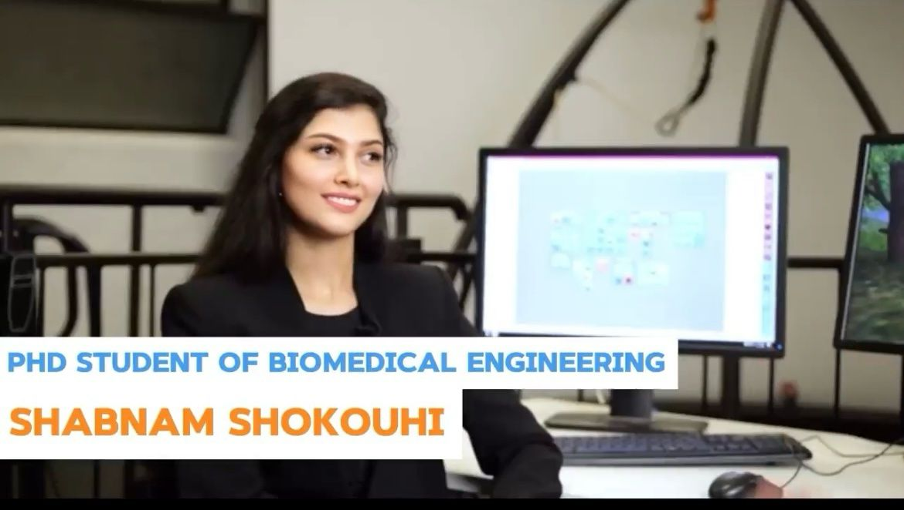

PhD Thesis: REACTIVE RECOVERY RESPONSES TO TREADMILL-INDUCED PERTURBATIONS DURING SLOPED WALKING
Objective & Clinical Implications
This project blends engineering and biomechanics to quantify the complex coordination of human
muscles during recovery from trip or slip-like perturbations. Understanding these recovery
mechanisms could help design more targeted fall prevention interventions and inform the development
of assistive devices.
Phase 1: Experiment design
We have a cutting-edge Computer-assisted Rehabilitation Environment (CAREN) lab at the University of Melbourne—it's truly remarkable! Check it out here. CAREN features a moveable platform, a programmable split-belt treadmill, and a semi-immersive virtual reality environment (Figure 1). I designed an innovative set of experiments that involved triggering trip and slip-like responses within the natural pattern of walking. By rapidly decelerating or accelerating one belt of the split-belt treadmill, we were able to simulate falls in a safe, controlled, and repeatable manner. How cool is that?
Challenges: One of the most challenging aspects of the project was automating the entire test protocol and data collection process. This included precisely controlling the treadmill’s speed based on a predetermined profile at specific points during the gait cycle, reading and synchronizing data from the motion capture system, calibrating the cameras to the platform’s reference frame, and automating the storage of data within the desired time window. These were just a few of the countless challenges I encountered and successfully managed during the project’s early stages.
In the second phase of the project, we recruited 44 healthy young participants and equipped them with various tools, including infrared-reflective markers (technically not a sensor), surface EMG electrodes, and IMUs. We had them walk under various conditions, such as on level and sloped surfaces and while engaging in an interactive VR game. During these tasks, we unexpectedly applied perturbations to observe their responses. We collected data on their motion, muscle activity, and ground reaction forces.
Challenges: Collecting data from multiple sensors simultaneously was tricky, and we had to troubleshoot and fix some glitches in the CAREN system. Ensuring the safety of the subjects was a big responsibility, and working long hours with the participants could be tiring, but honestly, this phase was a lot of fun and really enjoyable.

Next, I cleaned, filtered, and analyzed the data we collected, focusing on quantifying features like stability, whole-body angular momentum, muscle forces, and joint reaction loads. Using musculoskeletal modeling techniques, I aimed to unravel the mechanisms we use to recover from a fall. The human musculoskeletal system is incredibly complex—it's a multi-linkage, nonlinear, and mechanically redundant system. Musculoskeletal models typically involve multi-segmented linkages with muscle-tendon actuators, governed by equations of motion based on classical mechanics, such as Newtonian and Lagrangian principles. This project allowed me to apply all my knowledge of mechanics, helping me understand and model the intricacies of the human musculoskeletal system through detailed modeling and dynamic simulations.
Challenges: The biggest challenge I faced was dealing with the massive dataset—over 3,000 trials! Processing all that data one by one was impossible, so I developed a computational pipeline (Figure 3) using MATLAB and Python to batch process all the trials. It was a tough task, but it taught me a lot about data analysis and programming.
Another challenge was the mathematical redundancy of the musculoskeletal system. Since the number of muscles actuating a joint exceeds its degrees of freedom, there are countless muscle combinations that could produce the necessary joint moments for a given motion. Solving this redundancy and estimating individual muscle forces became a complex optimization problem. I tackled it using static optimization and dynamic optimization with direct collocation methods to find the best solution.
 Throughout my PhD, I delivered over ten presentations at international conferences and lab demonstrations to investors and industry partners from private and defense sectors, Victoria's parliament members, and representatives from Google, among others. Our lab was also featured in a TV program called "The Come Up Starter Kit" on Channel 31. Check it out here.